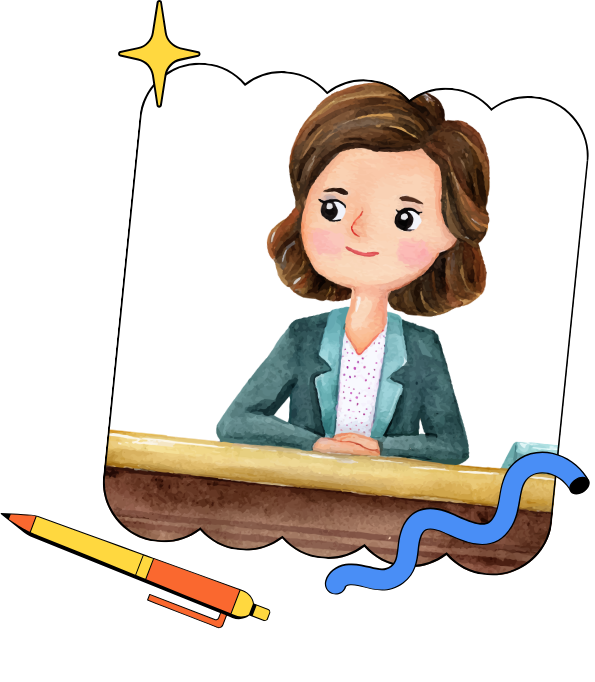

Section F - Reflective Summary

Caption
This reflective summary is the final mix of my journey through Pedagogy as Process. It captures the feelings and growth behind this portfolio, and how theory met practice in my classroom and pan room. It traces how my philosophy evolved from teacher as sole sound engineer to lead engineer in a shared studio, where colleagues collaborate and students learn to adjust their own levels. More than a conclusion, it declares my purpose: to listen, adapt and create conditions in which every learner can be heard. It is an ending and a beginning for me as an ever-evolving music educator.
Word count: 99Reflective Summary
When I began Pedagogy as Process, I felt confident after years at the keyboard and in the pan room. That confidence was tested this term. Managing the demands of the programme, an increased teaching load at school, and preparing my students for music competitions left me completely overwhelmed, and there were moments when I wanted to give up. I felt exhausted, stretched thin and unsure whether I could finish well. Yet as I pieced this portfolio together and saw my work take shape, those feelings slowly gave way to relief and pride. Pausing, prioritising and asking for support were not signs of failure but part of the process.
The greatest impact on my understanding of my discipline came from co-planning and co-teaching the Form 4 Dancehall lesson with Ms. Marcela Boatswain. I had approached Dancehall mainly as a genre to analyse for CSEC: rhythm, riddim, instrumentation and form. Working alongside a History and Social Studies teacher showed me music as a living record of a people’s history, identity and resistance. My students did not simply hear the music; they asked why it sounded the way it did and whose voices it carried. Music education is richest when it connects to students’ lives and to other disciplines. The task analysis also humbled me. Breaking down a skill I take for granted revealed how many small steps lie inside it, and how easily a student can be lost at step three while I am already at step eight. I now plan with greater care for sequencing, scaffolding and modelling.
Moving forward, I intend to keep collaborating across departments and to strengthen my assessment practice through formative checks, peer feedback, self-assessment and sustained creative projects, so that assessment guides learning rather than merely measuring it. I will continue adapting strategies for the pan room, where there are no screens or writing surfaces and learning must happen through the ear, the body and the instrument. Above all, I will keep reading, reflecting and learning.
I entered this course believing that the music classroom is a recording studio and that I am the sound engineer: listening carefully, adjusting levels and creating balance so that every “track” can contribute to the final recording. I still hold that image, but the course changed where I stand in it. My initial philosophy placed me alone at the mixing desk. Every fader was my responsibility; I listened, I adjusted, I decided what the final mix should sound like. Even my learner-centred intentions assumed that I did all the balancing.
Pedagogy as Process moved me away from that solitary desk in three ways. First, the Dancehall collaboration showed me that good recordings have more than one engineer. Ms. Boatswain heard what I could not, and the lesson was richer because we shared the console. Second, I realised that my students must learn to engineer their own sound. Through reflection, peer feedback and self-assessment, they can listen back, identify what needs adjusting and make those changes themselves. My goal is no longer only to balance them, but to hand them the faders. Third, this exhausting term taught me that the engineer is also a track in the mix. When I pushed every channel into the red, the whole recording distorted. Equity must include the teacher; I cannot help every student be heard if I ignore my own signal.
My philosophy has shifted from teacher as sole engineer to teacher as lead engineer in a shared studio, one who teaches others to listen and knows when to let them take the desk.
I close with a short verse:
Adjusting the Levels
I walked into the studio, thought the desk was mine alone,
Every fader in my hands and every sound was mine to own.
Then the workload hit the red and the mix came crashing down,
So I learned to share the console, learned to let them find their sound.
Chorus:
Now we’re adjusting the levels, finding balance in the noise,
Not one hand on every fader, every learner finds her voice.
From the pan room to the classroom, every beat is part of me,
Pedagogy is a process, and the final mix is free.
Watch “Adjusting the Levels” on YouTube
Word count: 690